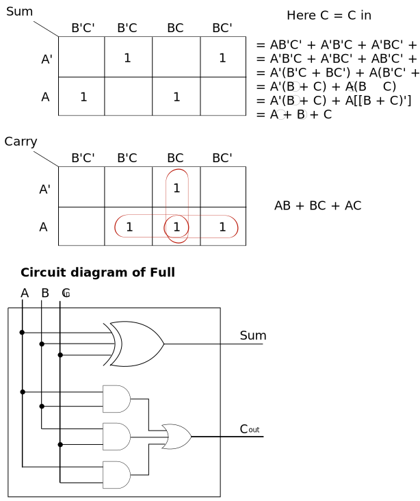
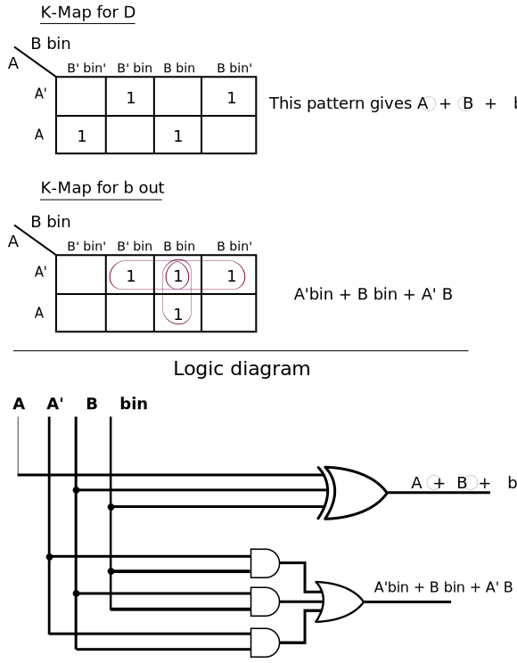

Logic circuits are of two types: 1. Combinational 2. Sequential.
____________________
------> | | ------>
I/P ------> | Combinational | ------> O/P
. m | Circuit | n .
. | | .
------> | | ------>
--------------------
Application:
____________________
A -----> | | ------> Sum
| Half |
I/P | Adder | O/P
| |
B -----> | | ------> Carry
--------------------
Truth Table
Input | Output
-------------------------
A B | Sum Carry
0 0 | 0 0
0 1 | 1 0
1 0 | 1 0
1 1 | 0 1
____________________
A -----> | | ------> Sum
| Full |
B -----> | Adder |
| |
C in -----> | | ------> C out
--------------------
Truth Table
Input | Output
--------------------------------
A B C in | Sum C out
0 0 0 | 0 0
0 0 1 | 1 0
0 1 0 | 1 0
0 1 1 | 0 1
1 0 0 | 1 0
1 0 1 | 0 1
1 1 0 | 0 1
1 1 1 | 1 1

____________________
A -----> | | ------> Difference (D)
| Half |
I/P | Subtractor | O/P
| |
B -----> | | ------> Borrow (B0)
--------------------
Truth Table
Input | Output
---------------------------
A B | D B0
0 0 | 0 0
0 1 | 1 1
1 0 | 1 0
1 1 | 0 0
D = A'B + AB'
= AB' + A'B
= A ^ B
B0 = A'B
____________________
A -----> | | ------> D
| Full |
B -----> | Subtractor |
| |
b in -----> | | ------> b out
--------------------
Truth Table
Input | Output
--------------------------------
A B b in | D b out
0 0 0 | 0 0
0 0 1 | 1 1
0 1 0 | 1 1
0 1 1 | 0 1
1 0 0 | 1 0
1 0 1 | 0 0
1 1 0 | 0 0
1 1 1 | 1 1

Advantages:
There are following type of MUX:
Note:
Working:
Working:
F(A, B, C) = ∑(1, 3, 5, 6)
F(A, B, C, D) = ∑(1, 2, 5, 7, 9, 14, 15)
Working
Working
Inputs Outputs
A0 A1 A2 A3 A4 A5 A6 A7 B2 B1 B0
1 0 0 0 0 0 0 0 0 0 0
0 1 0 0 0 0 0 0 0 0 1
0 0 1 0 0 0 0 0 0 1 0
0 0 0 1 0 0 0 0 0 1 1
0 0 0 0 1 0 0 0 1 0 0
0 0 0 0 0 1 0 0 1 0 1
0 0 0 0 0 0 1 0 1 1 0
0 0 0 0 0 0 0 1 1 1 1
The 8 to 3 or octal to binary encoder consists of 8 inputs: A7 to A0 and 3 outputs: B2 , B1 and B0. Each input line corresponds to each octal digit and three outputs generate corresponding binary code.
Truth table ↓
INPUTS OUTPUTS
A0 A1 A2 A3 A4 A5 A6 A7 A8 A9 B3 B2 B1 B0
1 0 0 0 0 0 0 0 0 0 0 0 0 0
0 1 0 0 0 0 0 0 0 0 0 0 0 1
0 0 1 0 0 0 0 0 0 0 0 0 1 0
0 0 0 1 0 0 0 0 0 0 0 0 1 1
0 0 0 0 1 0 0 0 0 0 0 1 0 0
0 0 0 0 0 1 0 0 0 0 0 1 0 1
0 0 0 0 0 0 1 0 0 0 0 1 1 0
0 0 0 0 0 0 0 1 0 0 0 1 1 1
0 0 0 0 0 0 0 0 1 0 1 0 0 0
0 0 0 0 0 0 0 0 0 1 1 0 0 1
Truth table
I/P | O/P
A B | D0 D1 D2 D3
0 0 | 1 0 0 0
0 1 | 0 1 0 0
1 0 | 0 0 1 0
1 1 | 0 0 0 1
Working ↡
Truth table
I/P | O/P
A B C | D0 D1 D2 D3 D4 D5 D6 D7
0 0 0 | 1 0 0 0 0 0 0 0
0 0 1 | 0 1 0 0 0 0 0 0
0 1 0 | 1 0 1 0 0 0 0 0
0 1 1 | 1 0 0 1 0 0 0 0
1 0 0 | 1 0 0 0 1 0 0 0
1 0 1 | 1 0 0 0 0 1 0 0
1 1 0 | 1 0 0 0 0 0 1 0
1 1 1 | 1 0 0 0 0 0 0 1
Working ↓
Truth table
I/P | O/P
A B C D | D0 D1 D2 D3 D4 D5 D6 D7 D8 D9
0 0 0 0 | 1 0 0 0 0 0 0 0 0 0
0 0 0 1 | 0 1 0 0 0 0 0 0 0 0
0 0 1 0 | 1 0 1 0 0 0 0 0 0 0
0 0 1 1 | 1 0 0 1 0 0 0 0 0 0
0 1 0 0 | 1 0 0 0 1 0 0 0 0 0
0 1 0 1 | 1 0 0 0 0 1 0 0 0 0
0 1 1 0 | 1 0 0 0 0 0 1 0 0 0
0 1 1 1 | 1 0 0 0 0 0 0 1 0 0
1 0 0 0 | 1 0 0 0 0 0 0 0 1 0
1 0 0 1 | 1 0 0 0 0 0 0 0 0 1
Working ↡
Design and explain 8x1 MUX using 2x1 MUX.
Design 3x8 Decoder and explain its working.
Design 4 bit binary adder/subtractor and explain its working.
What do you mean by half adder combinational circuit? Draw and explain full adder circuit using two half adders.
Draw and explain working of 4 bit parallel binary adder subtractor circuit.
Implement the following function using 8:1 multiplexer:
F(A, B, C, D) = ∑(0, 1, 3, 4, 8, 9, 15)
Explain a 3x8 decoder with the help of AND gate and NOT gate. Implement a 4x16 decoder with two 3x8 decoders.
What is a demultiplexer? Explain the difference between DEMUX and MUX?